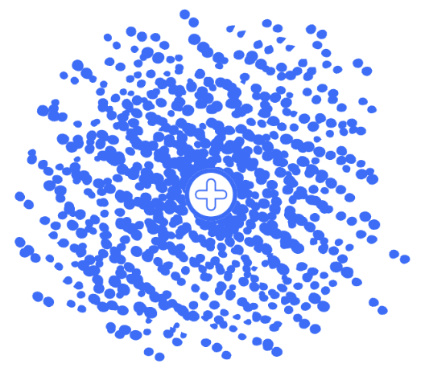
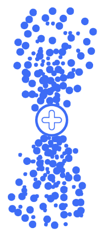

Fuzzy Clouds! (of Probability)
We can look past the quantum model for a moment and focus more on its effects on where electrons are found. Now that we understand that electrons are not in fixed orbits, it is natural to ask the question, “then what are electrons in, anyway?”
The answer is orbitals!
Orbitals and orbits sound similar, but they are very different. When you hear the word “orbital,” think of them as fuzzy clouds of probability. An orbital is defined as a region of space where an electron has a high probability of appearing in, such as 95%. We say “high” and not “guaranteed” because an electron can honestly appear anywhere. An orbital with a 100% chance of having an electron would be as big as the entire universe!

Each individual orbital can hold two electrons, both of opposite spin. “Spin” is an advanced quantum concept, and so will not be explained here, the point is that there must be some sort of distinction between two electrons in the same orbital. Remember this for when we go into the different diagrams for describing orbitals.
Orbitals also have names and shapes! The above diagram displays what would be called a “1s orbital.” The “1” signals that this orbital is found in the first shell, and the “s” labels the shape of the orbital. An s orbital is spherical in shape, hollow in the centre. In the first shell of an atom, it contains exactly one 1s orbital, meaning it can only hold two electrons.
The second shell also contains one s orbital, named a 2s orbital because it is now in the second shell. However, it also contains a second type of orbital, called a p orbital. These orbitals are slightly more complex in shape, like two teardrops forming from the nucleus and in opposite directions. Despite looking like two separate orbitals, both teardrops are counted as one, and therefore can still only hold two electrons.
At all energy shells, including the second shell, there can be three p orbitals, each 90 degrees away from each other in three dimensional space. For clarity, these are usually labelled with their axis, so the orbitals in the second shell would be labelled 2px, 2py, and 2pz respectively.

Doing the math, we find out that the second shell can hold up to 8 electrons, which matches with our current pattern.
The third shell becomes incredibly complex, since it introduces d orbitals with a more complex clover shape. As you go further up and introduce more and more orbitals, their shapes and rules will also get increasingly more complicated. When we get to f orbitals, each one will have a distinct shape!
For simplicity, we will not explain any more orbitals, just know that different types exist, and if you are interested, I recommend searching them up to read more. By the third shell, an atom can hold up to 18 electrons.